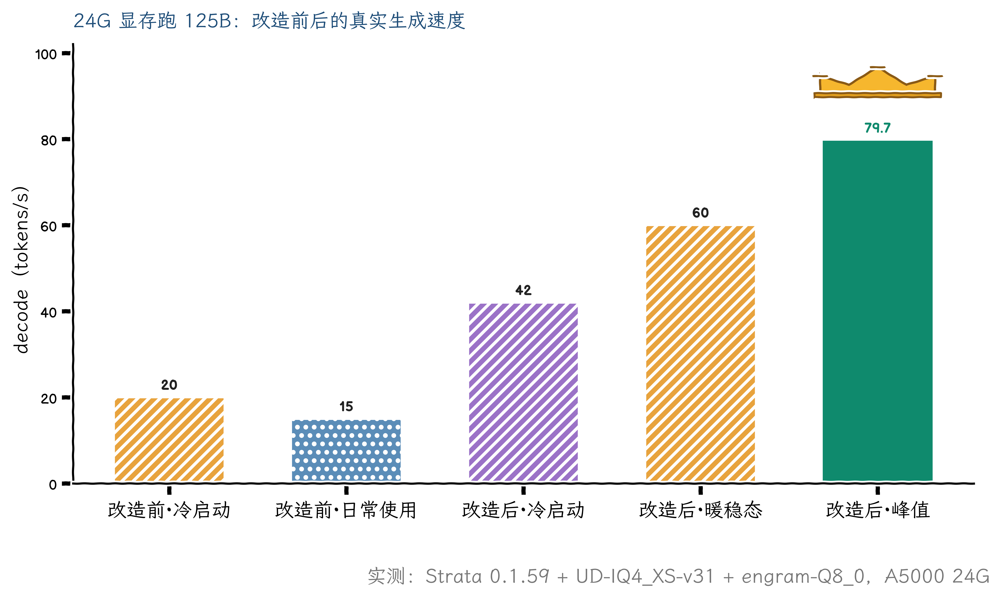
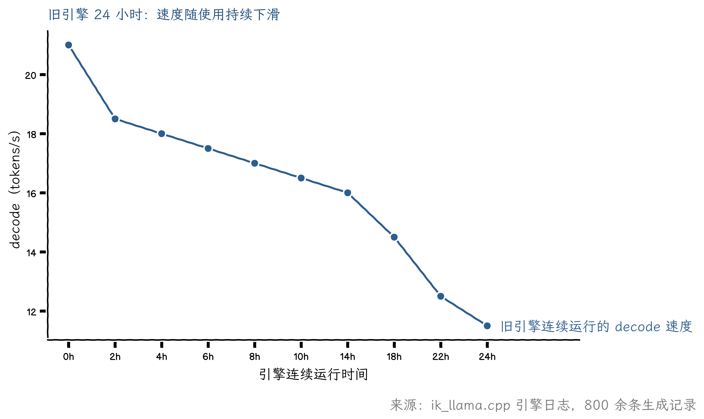
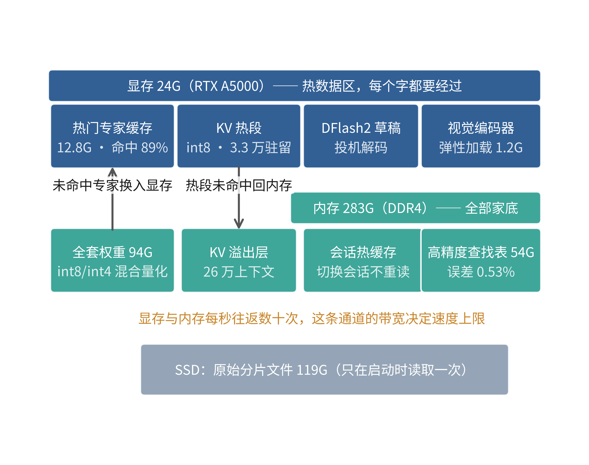
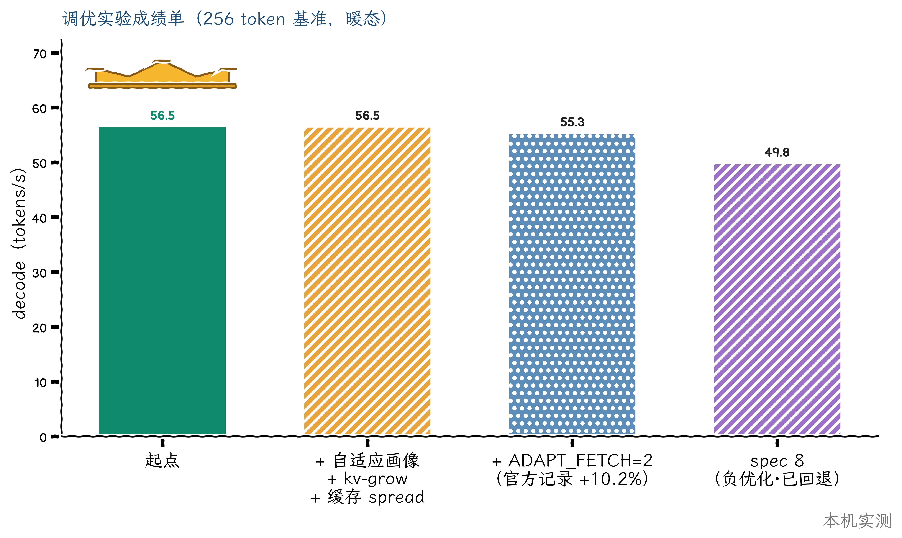

昨天我刚发过一篇文章，结论是“试过 Strata，最后留在了 tandem.cpp”。今天这篇把它推翻。不是昨天的判断错了，是当时有一个前提不成立：驱动版本不够，Strata 根本装不上。昨天之后，这个前提没了。
先给结果。同一个模型，同一张显卡，从 20 tokens/s 出头，做到了稳定 50 到 60，最好的一次跑到 79.7。中间踩了六个坑，每个都写在这篇文章里，包括我怎么发现的、差一点怎么误判、最后怎么解决的。如果你也是 24G 显卡加大内存跑 125B 的 MoE 模型，这篇记录了完整的排查和解决过程。
四张图把这次改造讲完。

第一张是结果。右边三根柱子是新方案：冷启动 42，暖态 60，峰值 79.7。左边两根是旧方案的常态：刚启动 20，日常用 15。

第二张是问题本身。旧引擎的速度不是恒定的，是一条持续下滑的曲线，灌一次大文档就跌到个位数。这不是错觉，是 800 多条日志画出来的事实。

第三张是新方案的结构。显存 24G 只放热数据，283G 内存放全部家底，两边每秒往返数十次——这条通道的带宽，就是这套方案速度的来源。

第四张是调优成绩单。冠军是起点自己：这轮调优没有在微基准上跑赢起点，真正的收益在结构与质量——命中率爬到九成、上下文翻倍、以及一个可以长期学习的缓存画像。
显卡是 RTX A5000，24G 显存。CPU 是 AMD EPYC 服务器平台，虚拟机分到 56 个线程。内存 283G，DDR4，前两年内存便宜的时候拿服务器条子拼的。系统是 Ubuntu 24.04，显卡直通进虚拟机。
模型是 Qwen3.8-Flash-Next，总参数 125B，量化之后 94G 左右。MoE 架构可以理解成一个很大的专家委员会：每个字进来，只需要其中一小部分专家处理。所以 94G 的权重虽然塞不进 24G 显存，速度却未必慢，前提是“这次要用的那部分权重”能又快又稳地送到该去的地方。不同的推理引擎，差别就在这个送货方案上。
内存在这套方案里的地位比显卡高。后面会看到，引擎要把几十 G 的专家权重常驻在内存里，显存只放热门部分。
20 tokens/s 跑对话还行，当干活的主力就难受了。我用它跑 agent，让它连续执行几十步工具调用，等输出的感觉像看慢放的录像。
真正的问题在后面。我把引擎日志里 800 多条生成记录按时间排开，看到一个规律。刚启动，速度 17 到 23。正常用一天，掉到 11 到 15。给它灌一次两万字的文档，瞬时掉到 7 到 9。
最差的时候只有标称速度的三分之一。我一开始怀疑引擎坏了、显卡降频、有程序抢资源，逐个查过，都不是。
这里还藏着第二个痛点，写在配置单上。这台机器配了 283G 内存，是整套配置里最贵的部分。可在 10 到 20 tokens/s 的速度下，这套内存的产出配不上它的投入：明明能支撑快得多的引擎，方案没跟上。
日志给出的答案很清楚。这个模型是 MoE 结构，可以想成一个很大的专家委员会，每个字只需要其中几位专家处理。引擎在显存里划了一小块地方（4G）放“最近最常用的专家”，没排上的从内存里现取。
刚启动的时候聊的都是常见话题，要请的专家就那几位，快区坐得下，20 tokens/s。真实工作里，多文件、多轮工具调用、长文档，需要请的专家远超快区容量，座位上的人被不停换下去，每一步都要从内存重新取，速度就掉到 11 到 15。灌一次大文档，等于把整个座位表掀了重排，瞬时 7 到 9。
所以这不是故障，是工作负载变重之后，那块 4G 的快区装不下了。
找到原因之后我反而松了口气，因为可以验证。我把免费手段全试了一遍：重启引擎，恢复到 15.5，好不了更多；把快区扩到 6G，显存不够，第一次解码直接崩；扩到 5G，没变化；改 CPU 绑核，更慢。
这四张牌打完，结论就不是“我觉得还能优化”，而是“这条路的容量天花板已经量出来了”。换方向的决策有了铁的依据。
这个模型有一个很活跃的中文社区——抡锤者（lcz.me），我在里面泡了一圈，看同款配置的实测帖，看的时候心情很复杂。
| 别人的硬件 | 精度档 | 实测速度 |
|---|---|---|
| RTX 5070，12G 显存，128G 内存 | IQ3_S（比我激进，质量略低） | 65 到 79 tokens/s |
| 老平台 + 3080 20G，内存带宽只有我的九分之一 | Q4 档（和我同档） | 39 到 45 tokens/s |
| 一张 7900XTX + 服务器平台 | IQ3_S | 90 到 125 tokens/s |
上面三个数据分别来自社区里的实测帖：3080 20G 的 Q4 档实测、RTX 5070 的 IQ3_S 实测、7900XTX 的 IQ3_S 实测，先谢过。
大家用的引擎是 Strata。它和传统方案的区别在于，专家缓存是一套完整的管理系统：命中率实时可见，大小可以精细调，连“几个会话来回切换时不重新读长文档”这种 agent 痛点都有专门的机制。
我为什么放弃过它？翻自己的记录，原因只有一个：驱动版本不够，Strata 新版需要更新的 NVIDIA 驱动。社区里有人直接写了“如果你的驱动自由，值得优先试”。
我为什么一直留在 535？不是懒得动。这套机器三四月装机的时候，NVIDIA 的新版驱动正好有严重 bug，只能把驱动钉在 535 上。这大半年，驱动是封存的禁区，别的都敢动，唯独它不敢。直到 535 系今年年中停止安全更新、上游驱动接连迭代把坑踩完、我专门做了一轮调研把目标版本和要避开的版本都定下来，才下的决心。现在理由凑齐了：旧驱动停更，新引擎装得上，旧引擎容量到顶。
第一，升级驱动。第二，换模型文件里的一张表。第三，装 Strata。
第二件事单独说一下，它是白捡的质量提升。解析模型文件时我发现，模型里最大的一张查找表（512 亿个数值，占整体体积约三成）在量化时被压得比较狠，和原版的误差有 7.57%。模型作者后来单独发布了这张表的高精度版本，误差 0.53%，并且官方支持混搭替换。换表之后其他全部不动，模型整体消灭了一个已知的系统性误差源，代价只是多占 25.6G 内存。这台机器 283G 内存，毫无压力。下载走国内镜像，104MB 一秒，十几分钟。
装驱动时报“找不到候选版本”。排查半天，是我的软件源配置少了一个组件分区。NVIDIA 驱动放在 Ubuntu 的 restricted 分区，我的源配置只开了 multiverse。补上之后驱动立刻可见。
更大的意外在后面。查备份通道时发现，535 系驱动已经从 Ubuntu 官方仓库整体下架，仓库里残留的 535 包全是空壳，装它们等于自动转投新驱动。也就是说，升级之后如果想退回，联网重装这条路是死的。
所以我升级前把现役驱动的内核模块、源码、用户态库全部打包成本地备份，一共 7G 多。事后看，新驱动一次成功，备份没派上用场，但如果没有这批备份，我就是在不带安全绳的情况下走钢丝。
另外两条纪律。装完先别重启，确认新模块编译注册成功再动。版本要挑：580 系的第一个点版本有个内核模块编译不过的已知问题，我装的是后来的 580.178.04，编译八十秒干净通过。
高精度查找表的下载链接按照直觉的文件名访问会报“资源不存在”。看了仓库的文件列表才发现，这几个文件的真实名字带一个多余的 .gguf_file 后缀。换成真实文件名立刻通。下载完我按字节数逐个核对了大小，再解析文件头确认表的精度档位，才动手替换。
Strata 的安装很顺：一条命令，自动识别显卡、下载对应版本、做性能调优，十五分钟。首次启动，速度从 20 跳到 56，这时候我还什么都没调。
但重新启动实例时踩了一个所有自启动服务都有的坑：命令执行“成功”，服务没起来。查下来是端口被一个残留实例占着，启动工具对端口被占的处理是静默退出，不留报错。
从此我的部署清单里多了一条死规矩：启动之后必须查端口监听、查进程归属，再跑业务验证。命令返回成功不算数。
换完引擎跑真实任务，遇到最诡异的问题：助手偶尔在回答里输出一整段原始 XML 格式的工具调用代码，而不是真正执行工具。任务卡死。
它是间歇性的，大多数时候正常。翻上游的问题追踪器找到了机制：这类引擎只解析“本轮请求里明确声明过的工具”的调用；如果模型喊了一个没在当轮清单里的工具名，哪怕格式完全正确，引擎也把整段调用当普通文本返回。
我的场景恰好会踩。模型偶尔会发明一个合理但没有注册的工具名。
解法是一个环境变量的事。引擎有个专门的开关，默认“按文本返回”，改成“按调用返回”。改完之后，模型喊了没注册的名字，客户端也能收到结构化的调用，把“这个工具不存在，你可用的有这些”回喂给模型，模型自己改名重试。从卡死变成了自我纠正。
配置好视觉之后，助手读图片还是报错。直觉去查视觉模块，查完发现它一切正常：引擎带视觉启动，编码器正常装载，我直接发一张测试图它准确说出了颜色。
真正的原因在客户端配置。助手的模型声明里少了一行“这个模型接受图像输入”，客户端发送前检查能力，发现声明里没有，直接拒绝，图根本没出门。补一行声明，重启，通了。
这件事的教训：全链路排查时，每一跳的“能力声明”和“实际能力”是两回事。错误发生在哪一跳，看那一段的日志，不要猜最复杂的部件。
正式切换当天，引擎连跑了近两个小时，一个正在生成的请求突然报连接错误。日志显示引擎进程被系统终止了。第一反应是内存耗尽，但当时内存还有 200G 富余。
真相是我给引擎服务加过一个“防御性”的内存上限。系统统计服务内存时，会把引擎读过的模型文件的缓存页也算进去，权重 119G，缓存就 119G，加上引擎本身占的 110G 左右，怎么都会突破我设的 200G。这个上限在大模型场景必然误杀。
移除上限，问题绝迹。设上限之前先搞清楚统计口径，这句话值一次半夜排障。
引擎稳定后，我让一个会自主执行几十步工具调用的助手跑了五十分钟真实任务，统计如下（14:35 到 15:25，51 个请求）。
51 个请求全部正常完成，没有一个中途失败。生成速度中位 54，均值 54.2，峰值 79.7。51 个里 50 个超过 40 tokens/s，唯一低于线的一次是重启后的冷启动。最大的一次读入了 178,365 token 的上下文，正常处理。专家缓存命中率稳定在八成以上，最高 92%。
体感：发复杂任务不用再盯进度条，消息发出去答案已经在流出来。灌长文档，首字等待从一分多钟变成几秒。模型质量因为换表反而提升了一个已知精度档。
换完引擎我没有停手，又做了三轮调优实验：给专家缓存装一套自适应画像（用得越多越懂该把哪些专家放进显存，命中率爬到九成）、把没被用到的上下文显存让给专家缓存、再把投机解码的窗口加宽试了一遍。最后这一招是负优化，已经回退。成绩单在“现在的方案”一节里：冠军是起点，这轮调优的收益不在微基准速度，在结构与质量。
还有一样东西的变化不在数字里：内存。现在引擎常驻内存 113G，里面装着四样东西：全套权重、高精度查找表、二十六万上下文装不下的那部分 KV（引擎自动把它们分流到内存）、还有最多 8G 的会话热缓存，作用是切换会话时不用重新读长文档。前两年拼的这 283G 内存，到今天才算物尽其用：显存放热门专家和热数据，内存放全部家底，各干各的。
| 层 | 配置 |
|---|---|
| 驱动 | NVIDIA 580.178.04，旧驱动完整备份在本地 |
| 引擎 | Strata 0.2.13，注册成系统服务开机自启 |
| 模型 | 官方 4 分片量化包 + 高精度查找表混搭，119G 放 SSD 和内存 |
| 关键参数 | 上下文 26 万 token；KV 用 int8，热段驻留显存、溢出走内存；专家缓存自动档；自适应学习开启并定期保存 |
| 客户端 | 模型声明补上图像能力；未声明工具调用改为返回真实调用 |
| 回滚 | 旧引擎脚本一条命令切回；旧驱动本地备份三件套 |
一，判断速度问题，先拉完整的日志时间线。单次测量说明不了任何事，缓存命中率随工作负载起伏，看清规律再动手。
二，免费手段全部试完，再决定换方案。试错记录本身就是决策依据，它把“我觉得还有优化空间”变成“这条路的天花板量出来了”。
三，同模型的社区实测比任何官方文档都值钱。引擎之间 2 到 20 倍的差距不会写在文档里，只在真实用户的帖子里。
四，动驱动之前打包备份。仓库会下架旧包，你以为随时能回头，回头路可能已经拆了。
五，量化模型的精度是分层管理的。找出误差最大的部件单独换高精度版本，可能是零代价的质量提升。
六，agent 场景选引擎，把工具调用的可靠性放在跑分前面。翻一翻它的 issue 区有没有“工具调用变文本”的未修复问题，一次失败就能卡死整个任务。
七，服务的内存上限不要拍脑袋设。搞清楚系统把什么算进账本，再决定上限是多少。
冷启动后的第一波请求会慢一些，连续使用才进入 50 到 60 的区间。生成速度再往上需要换硬件带宽档位了，软件侧已经到顶。上游还有一个工具调用的边角案例没修复，我们的场景没踩到，升级引擎时需要留意。自适应缓存还在学习期，命中率会随使用天数继续爬。
昨天那篇文章的标题说“最后留在 tandem.cpp”。今天起，留在 Strata。